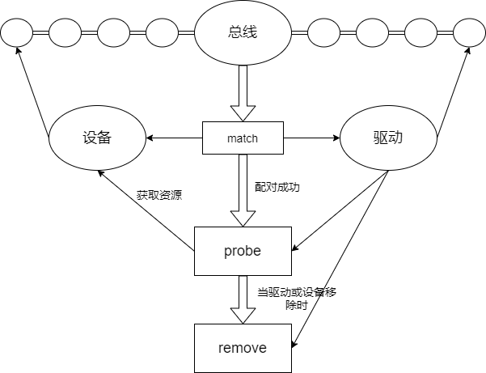

设备驱动基础知识¶
在Linux系统中，设备驱动以模块的形式出现。所谓模块就是实现了某个功能的一段代码。Linux内核支持在运行过程中动态地加载模块代码。以模块的形式编写代码，只需要编译相关的驱动代码即可，而不需要对整个内核重新编译。
模块的最终编译成的文件以.ko为后缀，通过insmod命令加载到内核，rmmod命令卸载。如果编写的模块有其他依赖，可以用modprobe命令一起加载。
设备模型¶
Linux引入了设备和驱动模型分层的概念，将我们编写的驱动代码分成了两块：设备与驱动。设备负责提供硬件资源而驱动负责去使用设备提供的硬件资源。二者由总线关联起来。
设备模型通过几个数据结构来反映当前系统中总线、设备以及驱动工作的情况：
- 设备（device）：挂载在某个总线的物理设备
- 驱动（driver）：与特定设备相关的软件，负责初始化设备以及提供一些操作该设备的方法
- 总线（bus）：负责管理挂载对应总线的设备及驱动
- 类（class）：对于有相同功能的设备，归结到一种类型进行统一管理
Linux内核使用sysfs文件系统将内核的设备驱动导出到用户空间，用户可以通过访问sys目录下的文件，来查看甚至控制内核的一些驱动设备。
/sys文件目录记录了各个设备之间的关系。其中，/sys/bus目录下的每个子目录都是已经注册的总线类型。每个总线类型下还有两个文件夹——devices和drivers；devices是该总线类型下的所有设备，以符号链接的形式指向真正的设备（/sys/devices/）。而drivers是所有注册在这个总线类型上的驱动。

/sys/devices目录下是全局的设备结构体系，包含了所有注册在各类总线上的物理设备。所有的物理设备以总线拓扑的结构来显示。
/sys/class目录下是包含所有注册在内核中的设备类型，按照设备的功能进行分类。比如鼠标的功能是作为人机交互的输入，于是被归类到/sys/class/input目录下。
那么“总线-设备-驱动”是如何配合工作的呢？

在总线上挂载了两个链表，分别管理设备模型和驱动模型。当我们向系统注册一个设备时，便会在设备的链表中插入新的设备。在插入的同时总线会执行match方法对新插入的设备/驱动进行配对。若配对成功则调用probe方法获取设备资源。
平台设备驱动¶
对于I2C、SPI、USB这些常见的设备来说，Linux内核都会创建与之相对应的驱动总线。但是有些结构简单的设备，比如led、rtc时钟、蜂鸣器等，内核就不会自己创建驱动总线。为了使这部分设备的驱动开发也能遵循设备驱动模型，Linux内核引入了虚拟的总线——平台总线（platform bus）。平台总线用于管理和挂载那些没有相应物理总线的设备，这些设备被称为平台设备，对应的设备驱动被称为平台驱动。平台设备驱动是Linux设备驱动模型的一种。平台设备使用platform_device结构体来表示，继承自设备驱动模型中的device结构体。而平台驱动用platform_driver结构体来表示，继承自device_driver结构体。
内核使用struct bus_type platform_bus_type来描述平台总线，该总线在内核初始化的时候注册。
platform_device结构体的定义如下：
struct platform_device {
const char *name; //设备名称，匹配时会比较驱动的名字
int id; //指定设备的编号
struct device dev; //继承的device结构体
u32 num_resources; //记录资源的数目
struct resource *resource; //平台设备提供给驱动的资源
const struct platform_device_id *id_entry;
/* 省略部分成员 */
};
平台设备¶
平台设备的工作是为驱动程序提供设备信息,设备信息包括硬件信息和软件信息两部分。
-
硬件信息：驱动程序需要使用到什么寄存器，占用哪些中断号、内存资源、IO口等等
-
软件信息：以太网卡设备中的MAC地址、I2C设备中的设备地址、SPI设备的片选信号线等等
对于硬件信息，使用结构体struct resource来保存设备所提供的资源，比如设备使用的中断编号，寄存器物理地址等，结构体原型如下：
struct resource {
resource_size_t start;
resource_size_t end;
const char *name;
unsigned long flags;
/* 省略部分成员 */
};
-
name： 指定资源的名字，可以设置为NULL；
-
start、end： 指定资源的起始地址以及结束地址
-
flags： 用于指定该资源的类型，在Linux中，资源包括I/O、Memory、Register、IRQ、DMA、Bus等多种类型，最常见的有以下几种：
| 资源宏定义 | 描述 |
|---|---|
| IORESOURCE_IO | 用于IO地址空间，对应于IO端口映射方式 |
| IORESOURCE_MEM | 用于外设的可直接寻址的地址空间 |
| IORESOURCE_IRQ | 用于指定该设备使用某个中断 |
| IORESOURCE_DMA | 用于指定使用的DMA通道 |
设备驱动程序的主要目的是操作设备的寄存器。不同架构的计算机提供不同的操作接口，主要有IO端口映射和IO內存映射两种方式。对应于IO端口映射方式，只能通过专门的接口函数（如inb、outb）才能访问；采用IO内存映射的方式，可以像访问内存一样，去读写寄存器。在嵌入式中，基本上没有IO地址空间，所以通常使用IORESOURCE_MEM。
在资源的起始地址和结束地址中，对于IORESOURCE_IO或者是IORESOURCE_MEM，他们表示要使用的内存的起始位置以及结束位置；若是只用一个中断引脚或者是一个通道，则它们的start和end成员值必须是相等的。